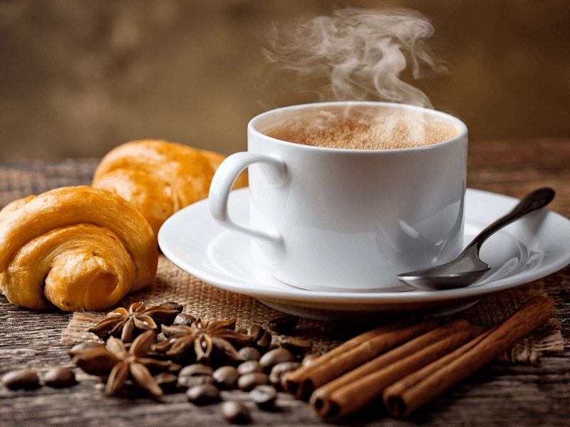
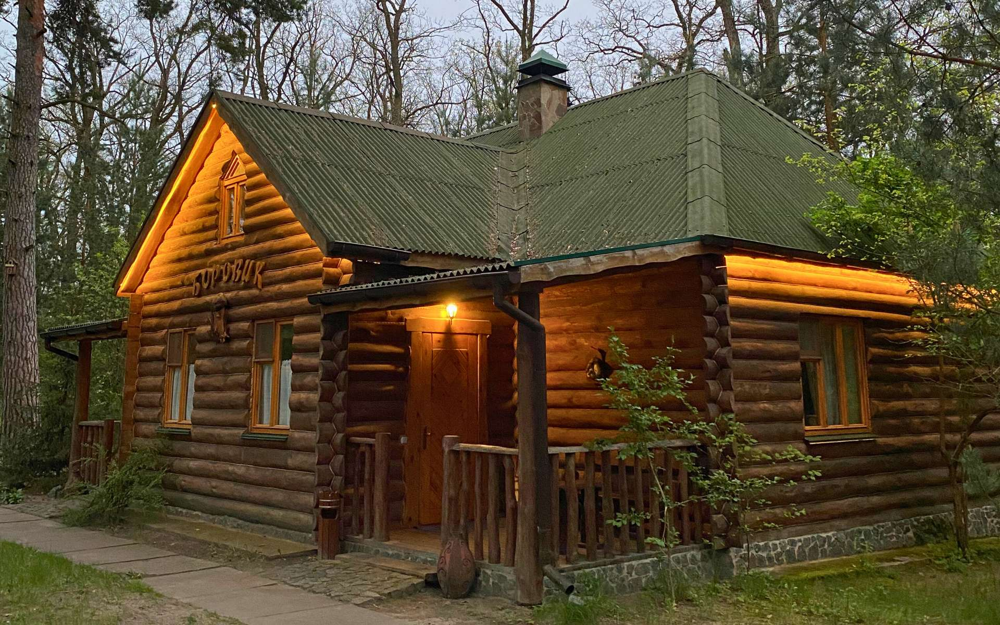

Мої захоплення
Мені цікаві заняття, у яких можна щось дослідити, спробувати власноруч і побачити результат. Зараз одним із таких занять стала верстка сайтів.
Технології та веброзробка
У веброзробці мене приваблює можливість перетворити ідею на щось, чим можна користуватися. Навіть проста сторінка починається з кількох рішень: що на ній буде, як розмістити інформацію і як допомогти відвідувачу знайти потрібне.
Коли сам починаєш створювати сайти, поступово звертаєш більше уваги на деталі. Як зроблено меню? Чому цей текст легко читати? Як розташовані блоки? Такі запитання роблять звичайний перегляд сайтів ще й джерелом ідей для практики.
Невеликі власні проєкти
Мені подобається формат невеликих задач, які можна довести до завершення. Наприклад, створити окрему сторінку, оформити картку або зібрати просте меню. У кожної такої роботи є конкретна мета й помітний результат.
Власні проєкти також дають свободу експериментувати. Можна спробувати інше оформлення, переставити елементи, порівняти кілька варіантів і вибрати той, який подобається найбільше.
Не кожен експеримент має стати частиною готового сайту. Іноді достатньо перевірити ідею та зрозуміти щось нове.
Пошук рішень
Окреме задоволення — розібратися з тим, що спочатку не виходило. Коли знаходиш причину помилки й бачиш, що все нарешті працює, з’являється бажання рухатися далі.
У таких ситуаціях допомагають уважність і готовність пробувати. Можна змінити одну деталь, перевірити результат, повернутися на крок назад або пошукати інше пояснення. Поступово незрозуміла задача стає цілком конкретною.
Час для відпочинку
Не весь вільний час хочеться проводити за навчанням. Іноді потрібно відкласти справи, перемкнути увагу й просто відпочити без списку завдань.
Перерва часто допомагає повернутися до роботи зі свіжим поглядом. Те, що довго не вдавалося помітити, після відпочинку може виявитися зовсім очевидним.
Що хочу спробувати далі
Надалі мені цікаво створювати більш самостійні роботи: придумувати структуру, обирати оформлення та поступово додавати нові можливості.
Хочеться мати кілька власних проєктів, за якими буде видно мій розвиток. Цей сайт — один із перших кроків у цьому напрямку.
Що мені цікаво спробувати
Окрім поточного завдання, є ще кілька ідей для практики:- Створити сторінку про улюблену гру, фільм або музичний альбом.
- Зібрати власну фотогалерею.
- Зробити сайт із добіркою корисних матеріалів.
- Створити портфоліо навчальних робіт.
Для кожної такої ідеї можна придумати свою структуру, підібрати зображення та потренуватися працювати з різними HTML-елементами.
Фотогалерея захоплень

Улюблена гра — Відьмак 3

Улюблений напій

Найкращий відпочинок